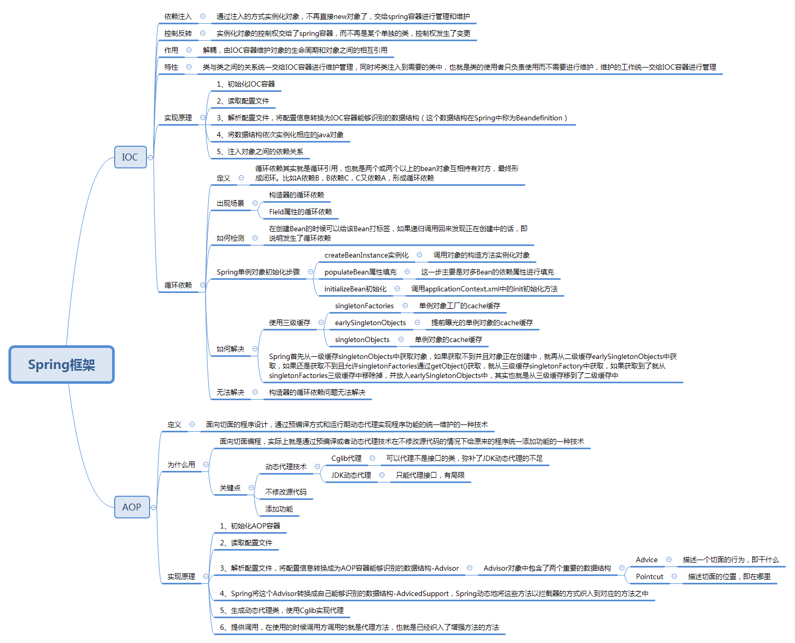

Spring容器当中包含了哪些常用组件，作用是什么，场景是什么？
在Java中依赖注入有哪些方式？
- 构造函数方法注入
- Setter方法注入
- 接口注入
@Autowired的自动装配，默认是根据类型注入，可以用于构造器、接口、方法注入
@Resource默认按名称装配，当找不到与名称匹配的bean才会按类型装配。
请解释Spring Bean的生命周期
- 实例化 Instantiation
- 属性赋值 Populate
- 初始化 Initialization
- 销毁 Destruction
Spring中bean的作用域
Spring IOC容器创建一个Bean实例时，可以为Bean指定实例的作用域，作用域包括singleton（单例模式）、prototype（原型模式）、request（HTTP请求）、session（会话）、global-session（全局会话）。
Spring的beanFactory和factoryBean的区别
BeanFactory(是一个工厂, 用于配置、新建、管理 各种Bean )
BeanFactory定义了IOC容器的最基本形式，并提供了IOC容器应遵守的的最基本的接口，也就是Spring IOC所遵守的最底层和最基本的编程规范。
它的职责包括：实例化、定位、配置应用程序中的对象及建立这些对象间的依赖。
在Spring代码中，BeanFactory只是个接口，并不是IOC容器的具体实现，
Spring容器给出了很多种实现，如 DefaultListableBeanFactory、XmlBeanFactory、ApplicationContext等，都是附加了某种功能的实现。
FactoryBean（工厂bean,是一个bean， 主要用于获取 实现该工厂bean接口的bean实例 ）
Spring中共有两种bean，一种为普通bean，另一种则为工厂bean。 用户通过实现FactoryBean接口 定制实例化Bean的逻辑。Spring自身就提供了70多个FactoryBean的实现。
它们隐藏了实例化一些复杂Bean的细节，给上层应用带来了便利。
使用Spring框架能带来哪些好处？
- 降低了组件之间的耦合性 ，实现了软件各层之间的解耦
- 可以使用容易提供的众多服务，如事务管理，消息服务等
- 容器提供单例模式支持
- 容器提供了AOP技术，利用它很容易实现如权限拦截，运行期监控等功能
- 容器提供了众多的辅助类，能加快应用的开发
- spring对于主流的应用框架提供了集成支持，如hibernate，JPA，Struts等
- spring属于低侵入式设计，代码的污染极低
- 独立于各种应用服务器
- spring的DI机制降低了业务对象替换的复杂性
- spring的高度开放性，并不强制应用完全依赖于spring，开发者可以自由选择spring的部分或全部
Spring提供几种配置方式来设置元数据，Spring提供哪些配置形式？
- 基于XML的配置元数据
- 基于注解的配置元数据
- 基于Java的配置元数据
IOC
Ioc—Inversion of Control，即“控制反转”，不是什么技术，而是一种设计思想。在Java 开发中，Ioc意味着将你设计好的对象交给容器控制，而不是传统的在你的对象内部直接控制。如何理解好Ioc呢？理解好Ioc的关键是要明确“谁控制谁，控制什么，为何是反转（有反转就应该有正转了），哪些方面反转了”，那我们来深入分析一下：
- 谁控制谁，控制什么：传统Java SE程序设计，我们直接在对象内部通过new进行创建对象，是程序主动去创建依赖对象；而IoC是有专门一个容器来创建这些对象，即由Ioc容器来控制对 象的创建；谁控制谁？当然是IoC 容器控制了对象；控制什么？那就是主要控制了外部资源获取（不只是对象包括比如文件等）。 - 为何是反转，哪些方面反转了：有反转就有正转，传统应用程序是由我们自己在对象中主动控制去直接获取依赖对象，也就是正转；而反转则是由容器来帮忙创建及注入依赖对象；为何是反转？因为由容器帮我们查找及注入依赖对象，对象只是被动的接受依赖对象，所以是反转；哪些方面反转了？依赖对象的获取被反转了。
IoC能做什么
IoC 不是一种技术，只是一种思想，一个重要的面向对象编程的法则，它能指导我们如何设计出松耦合、更优良的程序。传统应用程序都是由我们在类内部主动创建依赖对象，从而导致类与类之间高耦合，难于测试；有了IoC容器后，把创建和查找依赖对象的控制权交给了容器，由容器进行注入组合对象，所以对象与对象之间是 松散耦合，这样也方便测试，利于功能复用，更重要的是使得程序的整个体系结构变得非常灵活。
IoC和DI
DI—Dependency Injection，即“依赖注入”：组件之间依赖关系由容器在运行期决定，形象的说，即由容器动态的将某个依赖关系注入到组件之中。依赖注入的目的并非为软件系统带来更多功能，而是为了提升组件重用的频率，并为系统搭建一个灵活、可扩展的平台。通过依赖注入机制，我们只需要通过简单的配置，而无需任何代码就可指定目标需要的资源，完成自身的业务逻辑，而不需要关心具体的资源来自何处，由谁实现。
理解DI的关键是：“谁依赖谁，为什么需要依赖，谁注入谁，注入了什么”，那我们来深入分析一下：
- 谁依赖于谁：当然是应用程序依赖于IoC容器；
- 为什么需要依赖：应用程序需要IoC容器来提供对象需要的外部资源；
- 谁注入谁：很明显是IoC容器注入应用程序某个对象，应用程序依赖的对象；
- 注入了什么：就是注入某个对象所需要的外部资源（包括对象、资源、常量数据）。
IoC和DI由什么关系呢？其实它们是同一个概念的不同角度描述，由于控制反转概念比较含糊（可能只是理解为容器控制对象这一个层面，很难让人想到谁来维护对象关系），所以2004年大师级人物Martin Fowler又给出了一个新的名字：“依赖注入”，相对IoC 而言，“依赖注入”明确描述了“被注入对象依赖IoC容器配置依赖对象”。
IOC vs Factory
简单来说，IOC 与 工厂模式 分别代表了 push 与 pull 的机制：
- Pull 机制：类间接依赖于 Factory Method ，而 Factory Method 又依赖于具体类。
- Push 机制：容器可以在一个位置配置所有相关组件，从而促进高维护和松耦合。
使用 工厂模式 的责任仍然在于类（尽管间接地）来创建新对象，而 依赖注入 将责任外包。
循环依赖
Spring 为了解决单例的循环依赖问题，使用了 三级缓存 ，递归调用时发现 Bean 还在创建中即为循环依赖
/** 一级缓存：用于存放完全初始化好的 bean **/
private final Map<String, Object> singletonObjects = new ConcurrentHashMap<String, Object>(256);
/** 二级缓存：存放原始的 bean 对象（尚未填充属性），用于解决循环依赖 */
private final Map<String, Object> earlySingletonObjects = new HashMap<String, Object>(16);
/** 三级级缓存：存放 bean 工厂对象，用于解决循环依赖 */
private final Map<String, ObjectFactory<?>> singletonFactories = new HashMap<String, ObjectFactory<?>>(16);
/**
bean 的获取过程：先从一级获取，失败再从二级、三级里面获取
创建中状态：是指对象已经 new 出来了但是所有的属性均为 null 等待被 init
*/
- A 创建过程中需要 B，于是 A 将自己放到三级缓里面 ，去实例化 B
- B 实例化的时候发现需要 A，于是 B 先查一级缓存，没有，再查二级缓存，还是没有，再查三级缓存，找到了！
- 然后把三级缓存里面的这个 A 放到二级缓存里面，并删除三级缓存里面的 A
- B 顺利初始化完毕，将自己放到一级缓存里面（此时B里面的A依然是创建中状态）
- 然后回来接着创建 A，此时 B 已经创建结束，直接从一级缓存里面拿到 B ，然后完成创建，并将自己放到一级缓存里面
- 如此一来便解决了循环依赖的问题
Spring AOP与IOC的实现原理

IoC的实现原理：工厂模式加反射机制 。
通过解析xml文件，或取到用户配置的bean，然后通过反射将这些bean挨个放到集合中，然后对外提供一个getBean()方法，以便我们获得这些bean。
AOP： 面向切面编程
AOP能够将那些与业务无关，却为业务模块所共同调用的逻辑或责任，例如事务处理、日志管理、权限控制等，封装起来，便于减少系统的重复代码，降低模块间的耦合度
AOP的实现方式：
JDK的动态代理：只能对实现了接口的类产生代理；缺点：必须让目标对象实现接口，才能使用JDK代理。
如果目标对象实现接口，spring默认采用JDK代理
Cglib的动态代理: 可以对没有实现接口的类产生代理。产生了子类对这个类进行增强。
如果目标对象没有实现接口，spring采用cglib代理
AOP的基本概念
- 连接点（JoinPoint）：需要在程序中插入横切关注点的点，连接点可能是在类初始化、方法调用、字段调用或处理异常等等。Spring中只支持方法执行连接点。
- 切入点（Pointcut）：一组相关连接点的集合。
- 通知（Advice）：在连接点上执行的行为，增强提供了在AOP中需要在切入点所选择的连接点处进行扩展现有行为的手段。包括前置增强（before advice）、后置增强 (after advice)、环绕增强 （around advice）。
- 切面（Aspect）：通知和切入点的结合。
- 织入（Weaving）：织入是一个过程，是将切面应用到目标对象从而创建出AOP代理对象的过程。
- 代理（Proxy）：通过代理方式来对目标对象应用切面。AOP代理可以用JDK动态代理或CGLIB代理实现。
- 目标对象（Target）：需要被织入关注点的对象。即被代理的对象。
JDK动态代理模拟
JDK动态代理的两个核心接口(类)分别是InvocationHandler和Proxy。注意：只能代理接口。
CGLIB动态代理模拟 CGLIB动态代理的两个核心接口(类)分别是MethodInterceptor和Enhancer。跟JDK动态代理很相似，用法也差不多。但CGLIB可以代理类和接口。注意：不能代理final类。
AOP详解
涉及到了 设计模式的 代理模式。
代理模式的实现呢，我们可以分为 静态代理 和 动态代理。
静态代理，主要是 一个接口，一个接口实现类 和 实现该接口的 代理类。 这些类都是在编译时 就确定好了，所以叫做静态代理，缺点 在于 每次都要写 一个实现接口的 代理类。 因此 出现了 动态代理。
动态代理 有 很多种框架。AspectJ、JBoss Aop、Spring Aop. 我们主要讨论 spring Aop。
AOP 实现有 JDK动态代理 和 Cglib 动态代理。spring AOP 这两种都是支持的。
单纯不使用spring AOP 去实现 JDK 动态代理，那么就需要 存在一个被代理的接口 和 被代理接口的实现类， 再创建一个实现 InvocationHandler 接口的类，在 invoke 方法中定义 代理类需要做的行为。
通过调用 Proxy.newProxyInstance 就可以为 被代理接口 动态生成一个 class 代理类。之后 只要调用方法的时候，只使用 代理类去调用，不使用 实现类。就能完成动态代理。
JDK 动态代理 生成的类 实现了 被代理接口，继承了 Proxy。由于java 只支持单继承，因此在 继承Proxy 之后，只能选择 实现 被代理接口，这也是为什么 JDK代理必须要求提供 被代理接口 的原因。
单纯不使用spring AOP 去实现 Cglib 动态代理，那么就需要 存在一个被代理的类， 再创建一个实现 MethodInterceptor 接口的类，在 intercept 方法中定义 代理类需要做的行为。
通过调用 Enhancer类 进行代码增强，就可以为 被代理类 动态生成一个 class 代理类。之后 只要调用方法的时候，只使用 代理类去调用，不使用 实现类。就能完成动态代理。
两者的不同：
1. 通过反射类Proxy和InvocationHandler回调接口实现的JDK动态代理，要求被代理类必须实现一个接口，但事实上并不是所有类都有接口，对于没有实现接口的类，便无法使用JDK动态代理。
CGLIB会让生成的代理类继承被代理类，并在代理类中对代理方法进行强化处理(前置处理、后置处理等)。
2.JDK动态代理，生成的代理类 是 实现了 被代理接口 的所有方法；
CGLIB 动态代理，生成的代理类是 对指定目标类产生一个子类，通过重写 所有父类方法的调用。
3. Java 动态代理使用 Java 原生的反射 API 进行操作，在生成类上比较高效；
CGLIB 使用 ASM 框架直接对字节码进行操作，在类的执行过程中比较高效。
Spring AOP：
1、若目标对象实现了若干接口，spring使用JDK的java.lang.reflect.Proxy类代理。
2、若目标对象没有实现任何接口，spring使用CGLIB库生成目标对象的子类。
只需要一个定义代理类所需要做的行为的 类。然后 可以选择 使用 xml 或者注解 两种形式 去定义 切面 和 切点。
代码1： 注解 + 定义一个 代理类所作行为的类
@Aspect
public class Audience {
/**
* 目标方法执行之前调用
*/
@Before("execution(** com.spring.aop.service.perform(..))")
public void silenceCellPhone() {
System.out.println("Silencing cell phones");
}
/**
* 目标方法执行之前调用
*/
@Before("execution(** com.spring.aop.service.perform(..))")
public void takeSeats() {
System.out.println("Taking seats");
}
/**
* 目标方法执行完后调用
*/
@AfterReturning("execution(** com.spring.aop.service.perform(..))")
public void applause() {
System.out.println("CLAP CLAP CLAP");
}
/**
* 目标方法发生异常时调用
*/
@AfterThrowing("execution(** com.spring.aop.service.perform(..))")
public void demandRefund() {
System.out.println("Demanding a refund");
}
}
在spring 配置中，开启 自动代理功能：
方法1： 在Java Config 类上，添加 @EnableAspectJAutoProxy
方法2： 在 spring xml配置中，添加
代码2：
定义切面和切点
<aop:config>
<!-- 切面 -->
<aop:aspect id="myAspect" ref="aBean">
<!-- 切点 -->
<aop:pointcut id="businessService"
expression="execution(* com.xyz.myapp.service.*.*(..))"/>
<!-- 环绕通知,在切点上执行切面bean的watchPerformance方法 -->
<aop:around pointcut-ref="businessService"
method="watchPerformance"/>
...
</aop:aspect>
</aop:config>
<!-- 切面: 在切点上执行相关代理行为的类 的bean -->
<bean id="aBean" class="...">
定义一个abean，实现 watchPerformance方法
public void watchPerformance(ProceedingJoinPoint jp) {
try {
System.out.println("Silencing cell phones");
System.out.println("Taking seats");
jp.proceed();
System.out.println("CLAP CLAP CLAP!!!");
} catch (Throwable e) {
System.out.println("Demanding a refund");
}
}
spring AOP原理
1、当spring容器启动的时候，加载两个bean，对两个bean进行实例化；
2、当spring容器对配置文件解析到